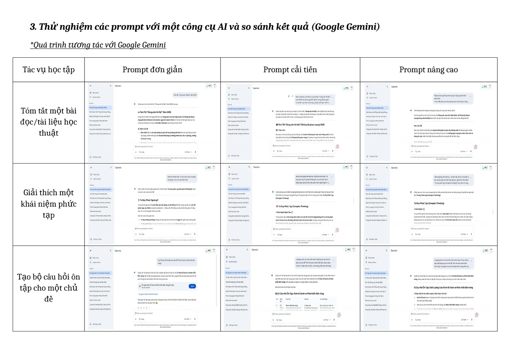
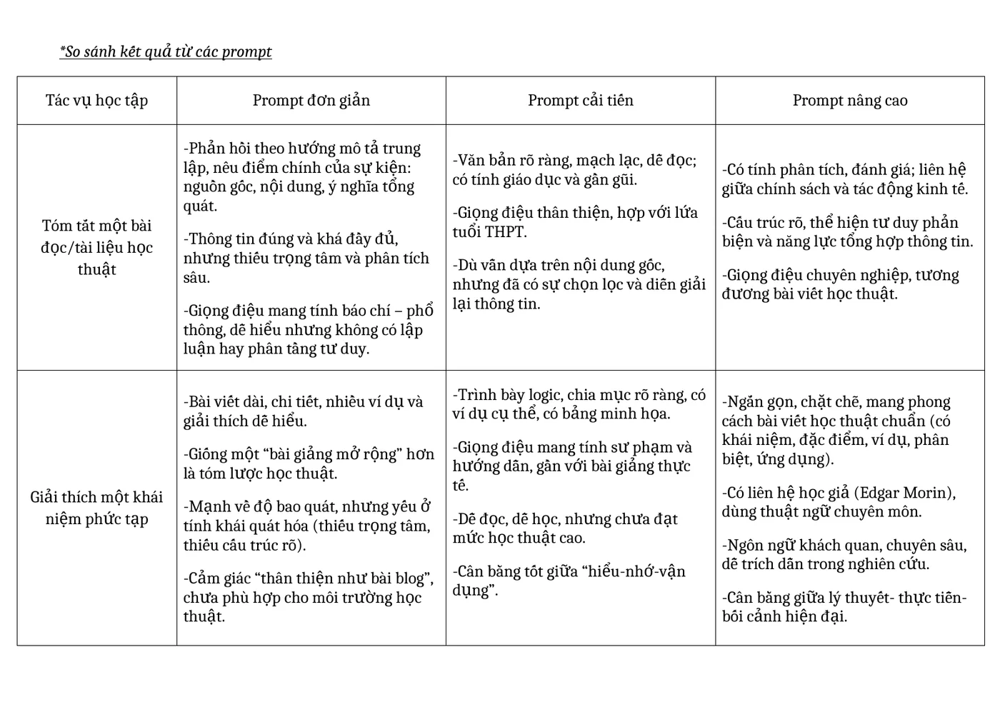

Năng lực cần hình thành
Phát triển kỹ năng viết Prompt có cấu trúc để tận dụng khả năng của mô hình ngôn ngữ lớn trong học tập.
Các bước thực hiện
Chọn ba tác vụ
Tóm tắt tài liệu học thuật; giải thích khái niệm phức tạp; tạo câu hỏi ôn tập.
Viết ba mức Prompt
Mỗi tác vụ có Prompt đơn giản, Prompt cải tiến và Prompt nâng cao.
Thử nghiệm trên Gemini
So sánh mức độ đầy đủ, chính xác, cấu trúc và khả năng bám yêu cầu.
Phân tích cơ chế
Xác định vai trò của bối cảnh, vai trò, ví dụ mẫu, định dạng và ràng buộc đầu ra.
Ảnh minh họa từ sản phẩm
Nhấn vào ảnh để xem kích thước lớn.


Những gì đạt được
- Prompt đơn giản cho đầu ra nhanh nhưng dễ chung chung.
- Prompt cải tiến rõ đối tượng, cấu trúc và độ dài nên kết quả ổn định hơn.
- Prompt nâng cao có ví dụ và tiêu chí giúp tăng khả năng kiểm soát đầu ra.
- Hiểu rằng người dùng cần đánh giá nội dung thay vì chỉ tối ưu câu lệnh.
Phân tích và hướng nâng cấp
Cấu trúc Prompt hiệu quả
| Thành phần | Vai trò | Tác động đến đầu ra |
|---|---|---|
| Vai trò | Định vị AI là giảng viên, người học kinh tế... | Điều chỉnh góc nhìn và mức chuyên môn. |
| Bối cảnh | Nêu mục đích, đối tượng và tài liệu đầu vào. | Giảm câu trả lời chung chung. |
| Nhiệm vụ | Mô tả chính xác việc cần làm. | Tăng độ bám sát yêu cầu. |
| Định dạng | Số mục, độ dài, bảng, tiêu đề... | Tạo cấu trúc nhất quán, dễ sử dụng. |
| Ví dụ mẫu | Cho AI thấy phong cách mong muốn. | Giảm sai lệch giữa kỳ vọng và kết quả. |
| Ràng buộc | Ngôn ngữ, số từ, độ khó, nguồn... | Kiểm soát phạm vi và hạn chế lan man. |
Prompt tốt không làm AI “thông minh hơn”, mà giảm không gian diễn giải mơ hồ. Khi bối cảnh và tiêu chí đầu ra rõ, mô hình có nhiều tín hiệu hơn để chọn nội dung, giọng điệu và cấu trúc phù hợp.
Sản phẩm đầy đủ
Bản PDF bên dưới được chuyển trực tiếp từ báo cáo đã hoàn thành. Nếu trình duyệt không hiển thị khung xem trước, hãy dùng nút mở PDF.